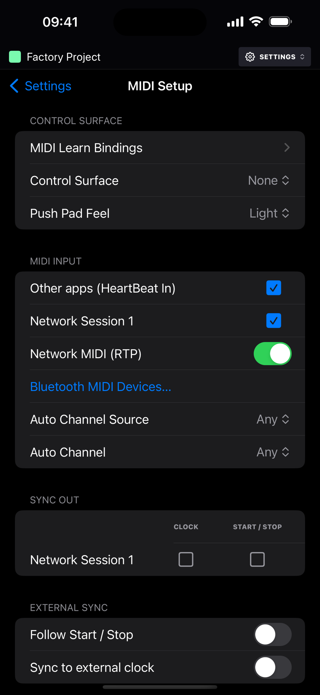

MIDI & Link
HeartBeat is as happy sequencing a rack of hardware as it is its own devices. Every track can have its own output, every keyboard and controller connects directly, the clock is sample-accurate, and a learn mode lets you put nearly everything on screen under a knob.
MIDI learn
Tap the radio-waves button next to the transport. It's also where the in and out activity lights live; the OUT light means notes and CCs, not clock. Every control that can be mapped gets a cyan outline. Tap one, move something on your controller, and that's the mapping made. Controls that already have a binding wear a cyan dot, and a long press on an outline clears its binding.
Long-press the learn button to choose what new mappings bind to:
| Mode | Meaning |
|---|---|
| Visible page | Eight knobs follow whatever page is showing: the TRG cells, the current knob page, the LFO rows. With a step latched they write p-locks. |
| Pinned track | The controls stick to the track that's selected right now, wherever you go afterwards. |
The mode only matters when you make a mapping. Everything you've mapped stays live at the same time, and one hardware control can hold one binding per mode.
- A mapped track button does what the pad does: it selects the track, pressing it again auditions the track's default note, in PLAY mode it plays the note for as long as you hold it, and with the mute board up it toggles the mute.
- You can map the transport (play, record, Q, FILL, tap tempo), all 16 mutes and track selects, the pattern slots, the page arrows for both carousels, knobs and device parameters, the morph pads and crossfader, the mixer faders, master level and returns, the compressor, limiter and EQ cells, the global FX, everything on the DJ FX page, the step condition and retrig sweeps, the track defaults, track length, 2×→, undo and redo, and the mode latches (MUTE, KEYS, PLAY, MORPH and the mute scopes). There's also an Ignore target for a controller output you want silenced.
- After a mapping, the app watches whether your control sends a release to work out if it's a button or a toggle. If it guesses wrong, the MOM/TOG chip in Settings → MIDI Setup → MIDI Learn Bindings puts it right.
- Relative encoders, the endless kind, work through imported binding files.
- Bindings can be exported and imported as a JSON file from Settings → MIDI Setup → MIDI Learn Bindings → •••, so you can share a rig. Imports merge, with the incoming bindings winning. Bindings live in the project and undo covers them.
Sequencing hardware
- Set a track's device to MIDI, then in its MIDI Out card pick an Output Device (any CoreMIDI destination: USB, Bluetooth, network, or a virtual port) and a Channel. All, the default, plays every connected destination, so a synth hears the track before you've chosen anything. If you unplug the device it stays in the list as "(offline)" and picks up again when it comes back.
- The MIDI device's pages are SRC, with the CHANNEL, BANK, SUB and PROG setup knobs over BEND, MOD, AT and BREATH, plus three pages of 24 assignable CC knobs, each with a name and a CC number.
- The track sheet's Audio In card picks the interface input the synth's audio comes back on, and a MIX page with gain, pan, chorus, drive, highpass, stereo width and sends joins the knob pages. See the audio return in the devices chapter.
- P-locks on a MIDI track are real CCs sent just before the note, and the setup knobs lock too, so one step can change channel or fire a bank and program change.
- Program changes go out in the proper order (bank MSB, LSB, program) when you turn the setup knobs, and automatically on a pattern switch for any track whose patch differs.
- Send MIDI to track, in the track sheet, layers a second device under the first: everything the track plays also plays the target, and targets can pass it on. See the sequencer chapter.

Getting MIDI in
Every MIDI source the system knows about connects to HeartBeat directly: USB, Bluetooth, the network, other apps' outputs. Plug in a keyboard and it plays, and records onto, the selected track, through whatever device that track is running. You don't need a router app. Connections follow plugging and unplugging, and if the app hears its own recent output echoed back it ignores it.
Where a note lands works the way it does on a hardware groovebox. In Settings → MIDI Setup, Auto Channel is the channel that always plays the selected track, either Any (the default) or one specific channel, and Auto Channel Source can narrow that to one input. In the track sheet, each track's MIDI In card gives it an Input Device (Any, or one source) and an Input Channel (Off unless you set one), so a keyboard on channel 5 can always play track 5 whatever's selected. The order is: a specific auto channel wins on its own channel; then a track whose input channel and device match takes the note; then, if Auto Channel is Any, the selected track takes it; anything left is ignored. Recording lands on whichever track received the note. The on-screen keys and pads always play the selected track.
- Settings → MIDI Setup → MIDI Input lists every source with a tick box. They're all on to begin with, and your choices are remembered.
- Other apps (HeartBeat In) is the virtual port other apps and routers send to. It keeps the same identity across launches. Unticking it drops what arrives without taking the port down, so routes saved elsewhere stay valid.
- Network MIDI (RTP) turns on the network session; connect to it from another device's MIDI Network Setup.
- Bluetooth MIDI Devices… opens the system pairing browser. Once paired, a device shows up as an ordinary source and destination.

Clock and transport sync
- Out: 24 PPQN MIDI clock and Start, Continue and Stop, all scheduled with exact host timestamps. Settings → MIDI Setup → Sync Out is a grid with a row per destination and a Clock and a Start / Stop tick box in each row. A destination you've never ticked follows its tracks, so it's clocked while one of them plays it, and Start / Stop follows the clock choice unless you set it differently. In practice that means a synth you sequence gets both without a trip to Settings, a drum machine you only want in time gets them with one tick, and a box that mustn't restart can take clock alone.
- In: Settings → MIDI Setup → External Sync. Follow Start / Stop obeys incoming transport messages, and Sync to external clock gently locks the tempo to an incoming clock while playing. The tempo face shows the clock's tempo while it does; the project's own tempo stays what you set.
Ableton Link
- Turn it on from Settings → Ableton Link, which is the standard Link sheet: enable, Start Stop Sync, the peer count and audio sharing. The status reads Connected, Enabled or Off.
- Tempo goes both ways and the quantum is one bar of 4/4, so joining a running session drops you in on the next bar line, in phase.
- With audio sharing on, HeartBeat announces a Link Audio channel called "Master" that streams the master mix to Link peers. It costs nothing until a peer actually subscribes.
- Stream to Link, in a track's Audio Out card, announces a channel per track named after the track, so a DAW at the other end can take the kick, the bass and the lead on their own channels while the master keeps streaming too.
Settings reference
| Section | Rows |
|---|---|
| Audio | Output Device (the system route picker) and Master to Channels on multi-output interfaces. Tracks can also take their own outputs in the track sheet. |
| MIDI Setup | Its own page, in four cards. Control Surface: MIDI Learn Bindings, the Control Surface picker, Pad Feel for pad controllers (Default, Light, Lightest or Heavy). MIDI Input: Other apps (HeartBeat In), a tick box per connected source, Network MIDI (RTP), Bluetooth MIDI Devices…, Auto Channel Source and Auto Channel. Sync Out: the Clock and Start / Stop grid. External Sync: Follow Start / Stop and Sync to external clock. |
| Projects | New projects start with random sounds. Off by default; on, every track of a new project loads a random preset. |
| Ableton Link | The Link settings sheet. |
| Background | Run in background, on by default, so the app keeps playing under the lock screen. |
| About | The version and build you're running, and Acknowledgements: the third-party code HeartBeat ships with, its licences in full, and where the factory samples come from. |